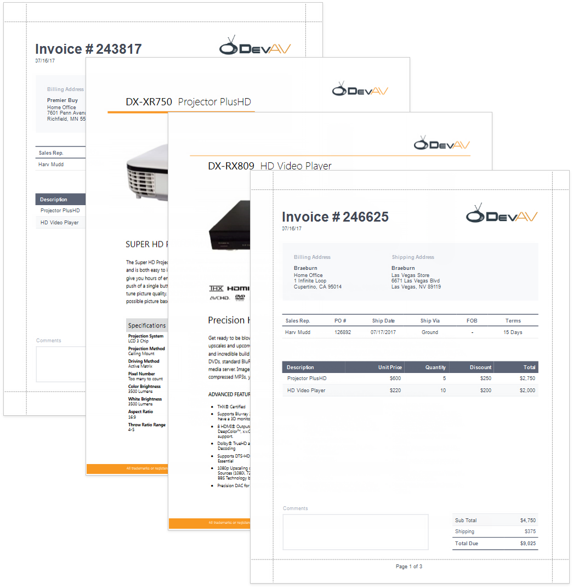

Reports Merged with PDF
This tutorial describes how to add PDF content to a report.

Tip
The Master-Detail Reports with Subreports) topic describes another way to create a report that merges different documents.
Create a Report Layout
Create a report that should include PDF content.
In this tutorial, the report shows a purchase order. A Detail Report band displays order details and customer information. An inner Detail Report band lists products included in an order.

Add PDF Content
Add a PDF document for each product listed in an order.
Add a Detail Report band at the location where you want to place PDF content. As PDF content is rendered on separate pages, the report from this tutorial includes this band at the bottom. Bind the new band to the same data member as in the Create a Report Layout section above.
Select the added Detail Report band and specify its Data Source and Data Member.
Drop the PDF Content item from the Toolbox onto the added band.
Bind the dropped control to the source of PDF data. Select the control, switch to the Properties Panel, click the Source property's marker, and select Source Expression. In the invoked Expression Editor, select the data source field that stores PDF documents and click OK.
Tip
Other options are available to bind the PDF Content control to PDF data:
- Bind to a PDF file
Specify the file's URL in the control's Source URL property. The specified file should be available when a report is generated. - Save the PDF content in the report
Click the Source property's ellipsis button and select the file from which to load the content.
- Bind to a PDF file
The report is ready and can be viewed in the Preview tab. Each PDF document is printed on a separate page and uses its own page settings.
